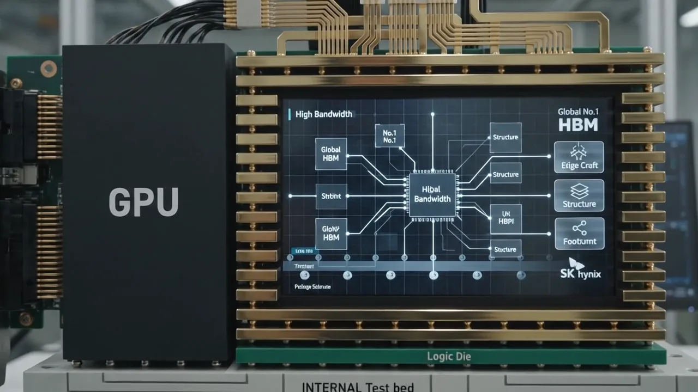

빅테크 고객 Pain 구조화
- GPU·ASIC 세대별 Memory 요구
- 성능·용량·전력·패키징 병목
- 고객별 Buying Center와 경쟁 구도
AI INFRA · STRATEGY TO EXECUTION
PAIN · 인증·패키징·물량 약정을 동시에 맞춰야 함
02 · WORKLOAD & ARCHITECTUREKV Cache 지배 병목을 HBM·Host DRAM/CXL·eSSD 계층화로 낮출 것인가PAIN · TTFT/TPOT와 Cost per Successful Task 악화
03 · NEW BIZ & TECH INSIGHTRAG 품질 Gate 통과 후 Index·Corpus 계층을 어떤 사업모델로 확장할 것인가PAIN · 검색 품질·권한·색인 최신성과 비용의 동시 통제
04 · PARTNER & EXECUTION전력·냉각·Fabric·Storage Gate를 통과한 Rack Cell만 파트너와 확장할 것인가PAIN · Rack/POD 확장을 제한하는 시스템 병목
고객 Pain · 맞춤 제안
공식 공동개발과 시장 보도 관계를 분리
AI INFRA STRATEGY ARCHITECTURE
산업 신호를 나열하지 않고 고객 Pain·사업 대안·경영진 결정을 한 흐름으로 연결
고객 Roadmap · Workload · Buying Criteria
Application · HW/SW · Data Center · SLO
Custom HBM · AI-D · AI-N · Partner
성능 · TCO · 차별화 · Right to Win
PoC · Qualification · LTA · Capacity
고객 현황·기술·전략 분석 → Pain 기반 Custom HBM·AI-D·AI-N 조합
DESIGN WIN · QUALIFICATION · REVENUEHW/SW·Fabric·Storage·전력·냉각 통합 진단 → Memory Placement·운영 전략
GOODPUT · SLO · COST / TASKAI 기술 변곡점 → Next Memory Thesis·사업모델·파트너 생태계
PIPELINE · POC · EXPECTED VALUE고객 Trace·SLO·Buying Criteria·Baseline
대안 Benchmark·Partner RACI·Business Case
PoC Gate·LTA·Capacity·Owner KPI
Four MECE Decision Domains · Console-connected
검증된 Console 신호를 불러와 전략 가설과 분리해 표시
Console 근거 보기 →Training time 단축, 안정적 Supply, Accelerator 세대 전환의 일정 위험 최소화
Compute·HBM·Host Memory·NVLink/Network·NVMe·Power/Cooling·Failure Recovery를 함께 측정
Training SW, Accelerator/HBM, Host DRAM, Fabric, Checkpoint eSSD, Base-Die·Package를 하나의 시스템으로 비교
NRE·장기 물량·Qualification 일정·Package allocation을 하나의 계약 Gate로 묶음
상업 출하·고객 Qualification·패키징 할당을 동시 관리
GATE · 고객 인증 + 확정 물량 + Ramp KPI공통 Stack·Package를 유지하면서 Logic Base-Die와 Firmware/Compiler 요구를 고객별 최적화
GATE · Architecture Lock + 공동 TCO최대 차별화와 NRE 기회 · TSMC Base-Die Capacity·Design·Yield·고객 집중 위험
GATE · Binding Volume + Margin Floor + Foundry Allocation고객 수요·공급 신호를 Architecture 판단과 분리해 표시
Console 근거 보기 →TTFT·TPOT/P99를 지키면서 동시 Session과 Context 길이를 확대
Paged KV·Batching·Prefix Reuse·Prefill/Decode 간섭·Offload와 Goodput을 동일 부하에서 측정
Custom HBM·AI-D·AI-N을 비교하고 HBF는 Lighthouse PoC에서 상호운용성·고객 인증 검증
추가 Memory 비용과 Throughput·Power/Token·증설 회피 CAPEX를 같은 단위로 비교
Scheduler·Batching·PagedAttention·Prefix Reuse·Prefill/Decode 분리로 추가 장비 전 개선 폭을 확인
TEST · SLO-constrained goodput / quality메모리가 지배 병목일 때 Active Context를 확장하고 SLA·Topology·상호운용성을 함께 검증
TEST · P99 / utilization / TCOOCP 규격·초기 생태계 확인 완료 · 상호운용성·실제 Workload·고객 Qualification 검증
TEST · reuse / integration / qualificationAI Storage 신호를 RAG 고객의 운영 KPI와 연결
Console 근거 보기 →Index 규모와 Freshness를 확대하면서 Query P99·보안·Reliability SLA를 유지
Index resident ratio·cache hit·read amplification·QPS·GPU wait·power/query 계측
Active Index와 Cache는 DRAM/CXL, Vector·Document Tier는 고용량 TLC/QLC eSSD로 분리
Drive 판매가 아니라 Controller/Firmware·Vector DB 튜닝·성능 보증을 묶은 솔루션으로 전환
P99는 유리하지만 대규모 Index의 Rack Cost와 전력 부담이 큼
FIT · Small / latency-critical corpusHot Index와 Capacity Tier를 분리해 Query Cost와 확장성을 균형화
FIT · Enterprise RAG at scaleCapacity 비용은 낮지만 Read amplification과 Tail Latency 관리가 핵심
FIT · High reuse / relaxed SLA발표와 계약, Qualification과 매출 인식을 분리해 추적
Console 근거 보기 →Pain Point Map·Workload Trace·Architecture·TCO·Qualification Plan을 표준 산출물로 묶음
실제 Trace 제공, 공동 Benchmark, 구매 기준 합의가 가능한 고객만 1차 대상
AI SW는 Placement, DC는 운영 KPI, OEM은 인증, Foundry/Packaging은 양산 준비를 책임
고객별 Custom 요소와 재사용 가능한 표준 요소를 분리해 반복 매출 구조로 전환
Model·Prompt·Serving Trace와 성능 목표 제공
OUTPUT · Test workloadRack·Power·Cooling·Network·Reliability Baseline 제공
OUTPUT · Operational KPIInteroperability·BOM·Certification·Volume Ramp 관리
OUTPUT · Certified platformProcess redesign·Adoption·Business Case·Change management 지원
OUTPUT · Adoption roadmapDecision Automation · Evidence to Action
ETag·날짜·본문·출처 등급을 코드로 확인
Entity·Product·Stage·수치·근거 문장을 구조화
원문·독립 출처·모순·Superseded 상태 판정
Pain·옵션·경제성·위험·중단 조건을 한 장에 연결
Owner·KPI·Trigger·Qualification·Revenue 전환 추적
North Star · Growth System
Capability System · MECE
01 · PROBLEM
02 · ARCHITECTURE
03 · DECISION
SLO·Quality·Goodput·System Economics가 합의 Baseline을 통과하지 못함
ACTION · HW/SW Architecture 재설계 · OWNER · CTO / AI InfraQualification·Package/Yield·Interoperability·Capacity가 합의 Readiness를 충족하지 못함
ACTION · 범위·Capacity 재배분 · OWNER · COO / EngineeringCommitted Volume·지불의사·Reference 재사용성이 합의 사업성 기준에 미달
ACTION · 단계 축소·중단 · OWNER · CFO / BusinessDecision Architecture · So What
Context 길이 증가 · 동시 Session 확대 · 대규모 Agentic AI Serving
TTFT·TPOT/P99·Goodput·Quality · KV 재계산 · GPU Stall
Scheduler·Batching·Prefill/Decode · Compute · HBM · Host · Network · NVMe · Rack 전력/냉각
SW First · Custom HBM Hot · AI-D System · AI-N eSSD/HBF Scale
추가 HW/SW 비용 · Goodput · GPU 유휴 · Power/Token · 위험조정 TCO 비교
Trace 수집 → Benchmark → Architecture PoC → SW 통합 → 신뢰성 → 고객 인증 → 양산 준비
Workload SLO와 단위경제성을 중심으로 전력·냉각·네트워크·스토리지·스케줄러·LLM Serving을 공동 최적화
업무 Outcome·Quality·Latency SLO
Model 교체 가능성·평가·통제
Gang·Topology·Quota·Preemption
Batching·KV·Prefill/Decode·Routing
동일 모델·SLO에서 Goodput/TCO
Collective 효율·KV 이동
Checkpoint·Retrieval·Recovery
MW·Rack kW·열 제거
계통 연결·단계 가동·입지 위험
Collective · Checkpoint · HBM · Power
Time-to-Train · Cost/RunHBM·KV Cache · TTFT·TPOT · 동시 사용자
Cache Hit · Cost/SuccessBatch 효율 · Queue · 처리 단가
Goodput · Cost/Task검색 품질 · Metadata·ACL · 색인 최신성
Recall@k · nDCG · Index LagTool 호출 · 동시 실행 · 외부 API
Task Completion · P99전처리 · Object Storage · Accelerator Memory
Ingest · Energy/Task설치량 전망이 아니라 검증된 Workload·SLO·Goodput 변화로 Capacity Mix를 조정
Cost per Successful Task = 총비용 ÷ 품질 기준 통과 업무
로그·업무 성공기준 없이는 대규모 CAPEX 보류
품질·P95·Cost/Task·보안·복구 Gate
Gateway·RAG·Serving·Observability
전력·열·SLO·복구 역량 검증
전력·탄소·수요 기반 Routing
Workload/SLO → 지배 병목 검증 → Option Set → 경영진 판단
공식 제품축과 실행 Stage를 분리해 Latency·Capacity·Topology·경제성 판단
Accelerator 근접 데이터 · 학습 · Token 생성
CPU Memory · Active KV · 시스템 용량
Pooling·공유 옵션 · Latency·Bandwidth·Topology·상호운용성 실측 필수
Context 재사용 · 검색 · Checkpoint · Data Lake
OCP 규격·초기 생태계 확인 완료 · 상호운용성·Lighthouse Qualification 검증
워크로드 → 데이터 역할 → 제품 대안 → 가치 KPI
X · Investment / Y · System Impact
Tech-to-Business Decision Frame
회사·제품별 발표 단계를 같은 기준일과 출처로 재검증하며, Sample·Qualification·Volume Shipment를 분리
SOURCE GRADE → BUSINESS IMPACT → GATE QUESTION → OWNER · KPI · KILL CRITERIA
최신 검증 원문과 판단 변경 KPI를 연결하고 있음
FACT → IMPLICATION → DECISION → ACTION / KILL
고객 Workload와 Memory Architecture 영향을 분리
선택지·사업성·Right to Win을 비교
Owner·KPI·다음 검증 시점을 연결
Partner System · Value Chain
지배 병목은 Workload·Context·Concurrency·SLO에 따라 Compute·KV Capacity·Data Movement·Network·Serving SW 사이에서 변화
A · Scheduler/Batching/Prefix Reuse
B · Prefill/Decode Disaggregation
C · Custom HBM + AI-D
D · AI-N eSSD + HBF Lighthouse
TTFT · TPOT/P99 · SLO-constrained Goodput · Quality · GPU Utilization · KV Reuse · Network Bytes · Power/Token
추가 HW/SW 비용과 Goodput·GPU Idle·Power 개선을 $/Million Tokens로 비교
HBM Bandwidth만이 아니라 Network·Checkpoint·Packaging·Power/Cooling·Qualification이 Training Time을 제한
Accelerator/HBM · RDIMM/MRDIMM · Network · Checkpoint eSSD · Packaging · Cooling · Capacity Plan
Training Time · Accelerator Utilization · Checkpoint Time · Failure Recovery · Rack Power · Cost/Run
Full-stack Attach와 공급 안정성을 Qualification Lead Time·Capacity Readiness·Revenue Opportunity로 연결
GPU 구매비보다 Query Latency·Index Capacity·Data Freshness·Security·Storage I/O가 실제 운영 병목
HBM = Generation · Server DRAM = Active Cache/Index · CXL = Elastic Capacity · eSSD = Vector/Document Tier
P50/P99 · QPS · GPU Utilization · DRAM-resident Ratio · Cache Hit Rate · Read Amplification · Power/Query
DRAM/CXL 증설과 eSSD Capacity 투자를 Cost/Query·Rack Density·Deployment Risk로 비교
의사결정 변화 · 실행 Trigger 우선

고객 Roadmap·Workload → 지배 병목 → Custom HBM·AI-D·AI-N → 계약·투자 Gate
Customer pain · workload solution · new business · execution
고객 KPI와 AI Application을 출발점으로 삼아, 실제 HW·SW 병목과 필요한 메모리 계층을 연결
AI Infra strategy council · evidence → choice → execution
Executive decision · historical backtest · actual evidence
고객 Pain · Workload Trace · Solution PoC · Qualification · 중단 조건을 하나의 실행 흐름으로 연결
China business · strategy formulation · evidence based

China business · strategic decision · evidence based
장기계약, 인증 지원, 제품 번들을 하나의 협상안으로 설계
01 / 07
AI Application과 SW stack을 먼저 분해하고, 데이터 이동·지연·GPU idle을 HBM·DRAM·CXL·eSSD 요구사항으로 번역

고객 JTBD, 구매 기준, 현재 KPI를 먼저 합의 · 수요 전망만으로 시작하지 않고 성능·비용·공급 안정성의 미충족 지점을 명확히 정의
Transformer 학습, Agentic inference, RAG 검색 경로를 계측해 Compute·Fabric·Host Memory·Storage 가운데 KPI를 제한하는 구간을 찾음
HBM·서버 DRAM·CXL·eSSD를 개별 제품이 아니라 하나의 Memory hierarchy로 설계하고, 고객 Workload에서 TCO 개선을 재현
0–30일 진단, 31–60일 Architecture·PoC 검증, 61–90일 Qualification·계약 확정으로 운영 · KPI 미달 시 투자 범위를 축소하거나 중단
Policy maker direction · China / Korea / United States

Training은 Accelerator·HBM, Agentic inference는 CPU·DRAM·eSSD, RAG는 검색 품질, On-device는 전력·원가가 구매 기준
Prefill·Decode, KV Cache, Vector Index, Corpus를 분리해 HBM–Host DRAM/CXL–eSSD의 계층별 용량과 병목을 계산
PoC → Qualification → Binding Order → Revenue Recognition을 고객별로 추적하고 LOI·전망은 확정 매출과 분리
고객 KPI 개선, 파트너 준비도, 패키징 수율, 계약 마진을 한 화면에서 비교해 제품·파트너·캐파의 Scale·Hold·Stop을 결정
China fab expansion infrastructure · policy and utility evidence
China workforce strategy · scenario tabs · lawful hiring
장비 PM·유틸리티·EHS는 현지 대응 속도를 높이고, recipe·수율·설비 변경은 최소 권한과 이중 승인으로 통제
BIS 원문 ↗TrendForce memory price board
| 품목 | 가격표 | 기준점 가격 | 최신 가격 | 실제 변화 | 관측 기간 | Trend |
|---|
영어권 / 중국어 기사 스트림
Community · Hiring
China NAND business strengthening

중국 반도체 흐름 요약
Talent and hiring early warning
AI Infra decision metrics
Account strategy · hyperscaler memory roadmap
Hyperscaler demand · account scenario
학습·추론·RAG·On-device를 분리하고 고객 채택 증거까지 확인해 HBM·서버 DRAM·CXL·eSSD의 투자 순서를 결정
Dynamic intelligence analysis
Competitive Dynamics · Money Flow

Training·Inference·Custom ASIC별 구매 기준을 분리하고 경쟁사의 고객 인증·제품 세대·공급 가능 시점을 같은 축으로 비교
Base Die·Foundry·Packaging Allocation·Accelerator 인증을 하나의 경로로 추적하고 가장 느린 Gate를 실제 병목으로 지정
수율·인증 리드타임·패키징 처리량·공동 Roadmap이 고객 KPI와 Margin Floor를 동시에 충족할 때만 Right to Win으로 인정
Binding Volume·Qualification·Package Capacity·Margin을 단계별 Trigger로 연결하고 미달 시 투자 범위와 고객 우선순위를 즉시 재조정
Premium AI architecture vs commodity volume
단순 점유율 대신 고객 JTBD·Qualification·Base Die·Package Allocation·Binding Volume을 같은 지표로 교차검증
China memory benchmark
중국 메모리 심층 벤치마킹
현지 운영 인력은 안정적으로 확보하되 recipe·수율·고객 비공개 데이터는 본사 승인 체계로 통제
BIS 원문 ↗Memory category classifier
Strategic response
Listed semiconductor value chain
실제 일별 종가를 100으로 정규화해 업종 흐름과 개별 종목을 동일 기준으로 비교